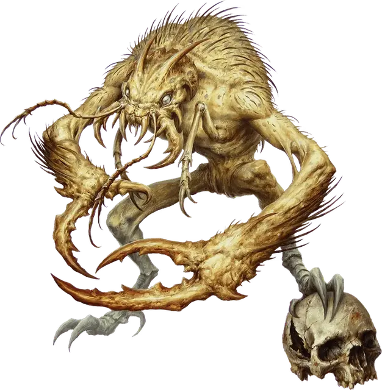

Минлок
Meenlock
Маленькая Фея, нейтрально-злая

Класс Доспеха 15 (природный доспех)
Хиты 31 (7к6 + 7)
Скорость 30 футов
| мод | спас | ||
|---|---|---|---|
| СИЛ | 7 | −2 | −2 |
| ЛОВ | 15 | +2 | +2 |
| ТЕЛ | 12 | +1 | +1 |
| мод | спас | ||
|---|---|---|---|
| ИНТ | 11 | +0 | +0 |
| МДР | 10 | +0 | +0 |
| ХАР | 8 | −1 | −1 |
Навыки Восприятие +4, Выживание +2, Скрытность +6
Иммунитет к состояниям испуг
Чувства тёмное зрение 120 футов, пассивное Восприятие 14
Языки Телепатия 120 фт.
Опасность 2 (450 опыта)
Бонус мастерства +2
Среда обитания Болото, Город, Лес
Особенности
Аура страха. . Любой зверь или гуманоид, который начинает свой ход не далее 10 футов от минлока, должен успешно пройти спасбросок Мудрости Сл 11 или стать испуганным до начала своего следующего хода.
Чувствительность к солнечному свету. Будучи на ярком свету минлок получает помеху на броски на попадание, а также на проверки Мудрости (Восприятие), основанные на зрении.
Теневой телепорт (Перезарядка 5–6). Бонусным действием минлок может телепортироваться в свободное пространство не далее 30 футов от себя, если и место откуда и место куда он телепортируется находятся в тусклом свете или темноте. Место назначения не обязательно должно находиться в поле зрения.
Телепатическое мучение. До четырех минлоков могут телепатически мучить одно беспомощное существо, наполняя его разум страшными звуками и ужасными картинами. Участвующие в этом минлоки не могут использовать свою телепатию для каких–либо иных целей в это время, хотя они могут перемещаться и совершать действия нормально. Эти пытки не имеют эффекта на существ, иммунных к состоянию испуга. Если существо не обладает иммунитетом и остается недееспособным на 1 час, оно должно пройти спасбросок Мудрости, получая 10 (3к6) урона психической энергией при провале или половину урона при успешном спасброске. Сл спасброска равна 10 + количество минлоков, участвующих в пытке, считая только тех, кто остается в поле видимости жертвы весь час и кто будет дееспособен в это время. Этот процесс может повторяться. Если хиты гуманоида снижаются до нуля в результате получения таких повреждений, он мгновенно превращается в минлока с полными хитами и под контролем Мастера.
Только заклинание исполнение желаний [wish] или божественное вмешательство может восстановить превращенное существо в его прежнюю форму.
Действия
Когти. . Рукопашная атака оружием: +4 к попаданию, досягаемость 5 футов, одна цель. Попадание: 7 (2к4 + 2) рубящего урона и цель должна преуспеть в спасброске Телосложения Сл 11 или стать парализованной на 1 минуту. Цель может повторять спасбросок в конце каждого своего хода и окончить эффект при успехе.
Описание
Минлоки – извращенные феи, наводящие ужас и стремящиеся уничтожить всё доброе, невинное и красивое. Они живут в основном в лесах, хотя хорошо адаптируются и к городской или подземной среде.
Воплощение страха. Минлоки порождаются страхом. Когда страх одолевает существо в Стране Фей или любом другом месте, где сильно влияние Страны Фей, один и более минлоков могут появиться в тенях или темноте поблизости. Если рождается более одного минлока, также магически формируется и логово. Земля скрипит и стонет, когда узкие, извилистые тоннели появляются в ней. Один из таких вновь сформировавшихся проходов становится единственным входом и выходом из логова.
От минлоков у других существ мурашки идут по телу. Минлоки проецируют сверхъестественную ауру,вселяющую ужас в находящихся рядом существ. Они настолько злые и извращенные, что осязаемое дурное предчувствие одолевает тех, кто входит в логово минлоков. Внутри норы чёрный мох покрывает все поверхности, приглушая звук. Большая центральная пещера служит жилищем минлоков, в котором они пытают пленников.
Обитатели тьмы. Минлоки не выносят яркого света. Они могут сверхъестественным образом чувствовать области тьмы и тени поблизости от себя и таким образом могут телепортироваться из одного затененного места в другое, что позволяет им подкрадываться к добыче или убегать, если расклад сил не в их пользу.
Телепатические мучители. У минлоков нет других форм общения кроме телепатии. Они могут использовать её, чтобы проецировать страшные галлюцинации в разум добычи. Эти галлюцинации принимают форму ужасного шепота или стремительного движения на границе периферийного зрения.
Днем минлоки сидят в своих темных норах. Ночью же они выползают из своих тоннелей, чтобы мучить спящих жертв, особенно тех, кто воплощает все то, что есть доброго в мире. Минлоки любят парализовать существ своими когтями, утаскивать их в логова, избивать их до бессознательного состояния и телепатически мучить их долгие часы. Гуманоид, не выдерживающий такого психического мучения, трансформируется в злого взрослого минлока.